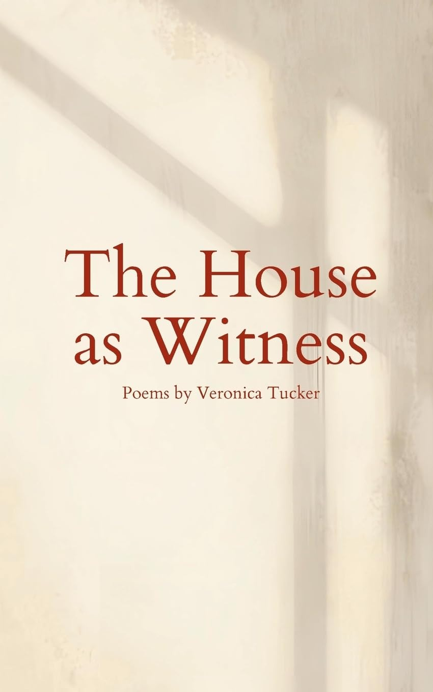
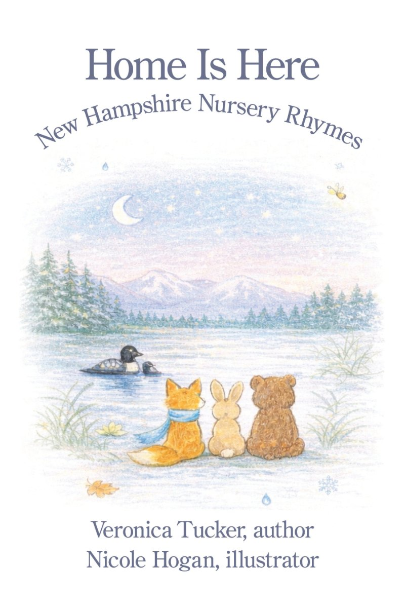

The House as Witness
Poems about memory, motherhood, healing and the places that hold us. A New Hampshire home, from construction and childhood through illness and inheritance.
Quillkeepers Press, 2026.
The same hallway could hold the sound of children running through it and, years later, the memory of someone who was no longer there.Veronica, talking to Literary Titan
Knowing what might happen medically doesn't make you any less of a daughter.
Home Is Here
New Hampshire nursery rhymes, the other side of the same place: original poems for the magic of childhood through all four seasons and the little moments that make it home. Illustrated by Nicole Hogan.

Veronica
Emergency medicine and addiction medicine physician, writer, mother of three, lifelong New Englander. She writes for the moments that do not fit into charts or case notes, and lives in New Hampshire, where the seasons shape her days.
Her work has appeared in The Offing, ONE ART, Rust & Moth and elsewhere, with Pushcart Prize and Best of the Net nominations and a place in Best Microfiction 2026.
From the writing desk Substack
If you or someone close to you needs them, Veronica keeps resources for help and healing and a page on ending stigma in addiction.
Tell me which line stuck with you.
A question, a kindred thought or one line. Veronica reads every note.
Write to VeronicaInstagram